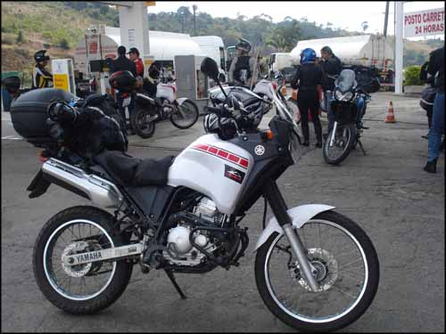
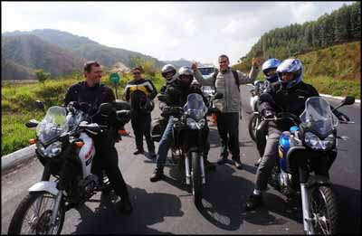
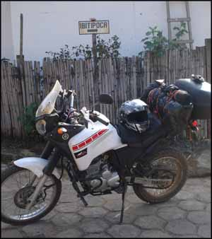
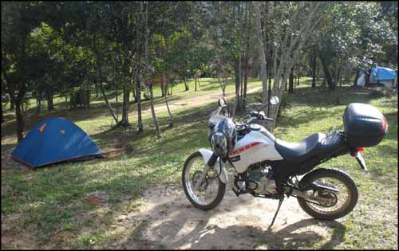
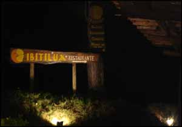
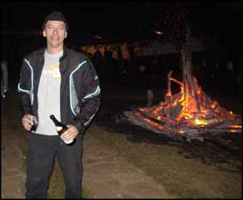
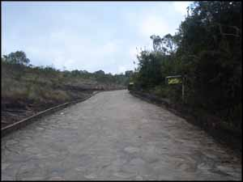
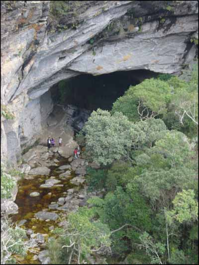
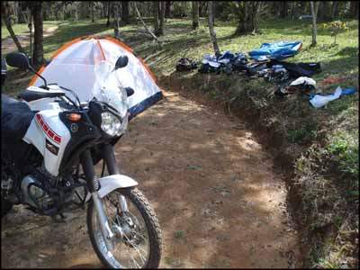
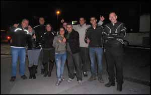

Noite de sexta-feira, mês de junho de 2013. Moto preparada e carregada para uma rápida viagem até Conceição de Ibitipoca, em Minas Gerais, conhecido paraíso ecológico com seu parque natural.
Já há muito tempo eu queria conhecer esse lugar, mas sempre naquela de ficar protelando, esperando animar... a vida não pode passar assim, certo? Então aproveitei que um pessoal do Tenere Club estava indo, e me juntei ao grupo (sete motos no total, todas Ténérés 250, saindo do Rio, mais umas 15 de São Paulo e Minas).
Sabia que chegando no sábado e indo embora no domingo não teria tempo para vistar decentemente o parque ecológico, mas resolvi ir e fazer um "aquecimento". Gostei do que vi, e em breve volto lá para ficar mais dias e fazer as trihas mais longas. Os melhores locais exigem um dia inteiro praticamente de caminhada, saindo bem cedo, e voltando já no fim do dia.
Ténéré carregada com pouca bagagem
Saí de casa às 6:00, e fui num posto de gasolina próximo abastecer e beber um rápido café. Um casal estava conversando na porta da loja de conveniência, e o cara me manda essa: "bonita a moto hein, é 1.200 cilindradas?". Haha já tinham me perguntado se era uma 600cc, e com ela carregada com barraca amarrada, bauleto, etc, eu até acho que parece maior aos leigos. Mas essa foi forte.
Bebi um mokachino, subi na motoca, e parti em direção à lanchonete "Casa do Alemão" na Rodovia Washington Luís. Peguei um chato engarrafamento na linha vermelha, putz, engarrafamento monstro às 6:30 da matina de sábado é dose! Mas depois de um longo corredor, cheguei no ponto de encontro. Como é de costume, o lugar estava lotado de motos e carros 4x4 do pessoal que vai viajar ou fazer offroad. O clima lá fica bem legal na manhã de sábado, eu curto ver o alto astral das pessoas na expectativa pelas emoções do dia.
Os demais integrantes do grupo foram chegando, e fui comer um dos famosos (e nada baratos) croquetes de carne dentro da lanchonete. De repente vejo uma movimentação lá fora. Um do nosso grupo que acabara de chegar derrubou sua moto, que caiu sobre a que estava na direita, que caiu, e que caiu sobre a minha, até que alguém conseguiu segurar e só marcou o tanque da minha com a borracha do acelerador do guidão da que caiu sobre ela. Ufa, já pensou ver a moto quebrada antes da viagem tão esperada? Foi um strike de motos, mas nenhuma com ferimentos graves. Nosso amigo foi logo apelidado então de "Sabotador", porque queria sabotar o passeio de todo mundo. Gente boa, que depois ainda iria protagonizar mais alguns pequenos desastres hehe.
Quando todos os demais participantes chegaram , pé na estrada. Média de 100Km/h, fizemos algumas paradas para esticar as pernas, paramos para um casal que chegou depois lanchar, e abastecemos em Juiz de Fora/MG. De lá, rumo a Lima Duarte/MG. Estavam refazendo o asfalto da rodovia, e ficamos uns bons 20 minutos presos na barreira de trânsito interrompido, após avançarmos à frente dos carros que ficaram engarrafados. Bom que, quando o trânsito foi enfim liberado, sobrou pra nós uma pista com asfalto novinho, sem nenhum carro à frente, e deu pra curtir bastante a estrada sem se preocupar com "mautoristas".
Esperando liberação do trânsito para seguir viagem...
Chegamos rápido em Lima Duarte, e já continuamos para Ibitipoca. São uns 26km de estrada de chão, com alguns pequenos pedaços com piso de cimento bem esburacado, ou paralelepípedos. Os buracos e a areia nas ruas diminuiram o ritmo, principalmente das motos que levavam garupa, e fizemos uma média de 50km/h com alguns trechos em 20km/h. Chegamos bem, e ninguém "comprou terreno" dessa vez.
Início da estrada de chão
O centro de Ibitipoca é bem pequeno, e tem um comércio exclusivamente turístico. Não estava lotado, mas estava cheio e animado. Alguns do comboio foram procurar suas pousadas. Eu, que não queria conforto, mas sim aventura, fui procurar um camping legal para ficar. Escolhi o "Reserva Canto da Vida", que fica afastado 2km do centro, mas bem perto do parque ecológico. O Caio que veio do Rio conosco também foi pra lá acampar. E depois chegou o Cléber, que veio de algum canto de Minas já quase na Bahia, não lembro de onde exatamente.
Acampamento estabelecido
A estrutura do camping é ótima, recomendo. R$ 15,00 de diária. Fui recebido pelo Sr. Nelson, que apesar de não ser muito falador, foi bem simpático. Havia um grupo bem animado na área de churrasqueira, eles estavam com jipes 4x4. Mas não deu tempo para socializar por lá. Armei a barraca, ajeitei minhas coisas, e voltei pro centro de Ibitipoca.
Morrendo de fome. Comi no restaurante do Camping Ibitilua. O camping é bem legal, só não fiquei lá porque preferi ficar próximo do parque. A comida foi mais ou menos, um bife de contrafilé que era metade gordura nao comestível, mas a guarnição estava legal. R$ 42,00 para servir duas pessoas. Não foi nada barato. Porém a garrafa de 600ml da Heineken que eu gosto estava por R$ 7,00. No Rio costumo pagar R$ 9,00 em média.
Restaurante Ibitilua à noite
Em frente tem o mercadinho "Altas Horas", e fui ver o preço de garrafas de vinho. Os olhos da cara. Um Tarapaca que eu pago cerca de R$ 12,00 no Rio estava por R$ 35,00. Por doze reais se comprava uma garrafa do "Canção". Tô fora.
Depois do almoço encontrei uma parte do pessoal que veio no comboio, e mais um comboio que veio de São Paulo, pessoal bem bacana, e que contava orgulhosamente com a única mulher pilotando uma moto, a Noellen que escreve no site Rumo aos Sonhos. Tinha um comboio de Minas também, mas esses eu não encontrei, foram embora no mesmo dia, passagem relâmpago.
Combinamos de encontrar de novo às 20:00 no centro, então voltei pro camping para acabar de ajeitar as coisas na barraca e tomar um bom banho. Deixei a cama pronta pois já previa o estado em que eu estaria na volta da noitada. Calculei bem.
À noite parti pro centro, e no caminho passei em frente da pousada do povo de Sampa, que por acaso estava subindo em suas motocas para saírem também. Esperei por eles e seguimos juntos. No centro encontramos o resto do povo do Rio, e começamos a cervejada para quem bebia. Algumas Heinekens, um caldo de "Vaca Atolada" muito bom no mesmo Restaurante Ibitilua (R$ 9,00). Depois alguém puxou um vinho meio gaseificado e surgiu um copo de uísque. E lá vai.
Descobrimos uma festa junina em um sítio ali perto, uma festa que o dono do sítio faz todo ano para arrumar uma prata. E que prata, R$ 5,00 só para entrar no sítio. Lá estava bem cheio, mas muita família e crianças infernizando e correndo pra todo lado e em volta de uma grande fogueira.
Vinho e fogueira na festa junina
Éramos umas 20 pessoas, e ninguém gostou da festa. Comida ruim (segundo disseram), bebida nem consegui saber o preço porque não consegui chegar perto do bar onde estavam acumulados provavelmente todos os moradores da cidade. Mas já que estávamos ali, ficamos conversando ao lado da fogueira e bebendo o vinho contrabandeado, até que lá pelas madrugadas o sono bateu e meti o pé pro camping.
Tinha marcado com o povo de encontrarmos às 8:00 na porta do parque ecológico, então acordei cedo, bebi um café na lanchonete do camping com um misto quente (R$ 5,00) e fui pra lá, caminhando pela trilha que existe dentro do próprio camping. Ninguém apareceu. Mesmo assim paguei os R$ 15,00 de entrada e emburaquei nas trilhas. Após entrar no parque a pé, da portaria até o estacionamento andei por uns 20 minutos ou mais, não marquei. Passei por uma recepção e me informei sobre o que eu conseguira fazer com o pouco tempo que tinha, já que o pessoal tinha combinado de voltar pro Rio depois do almoço. Fui atendido por um funcionário, que me mostrou todas as trilhas próximas, em uma maquete do parque, muito bacana.
Se eu tivesse ido de moto teria que pagar mais R$ 10,00 para entrar. Mas pelo tanto de tempo que desperdicei caminhando na ruazinha que leva pra dentro do parque, depois achei que compensaria.
Dentro do parque tem um camping também, mas não se pode entrar ou sair dele após o fechamento do complexo, às 17:30. Por isso não fiquei lá mesmo, que seria um adianto pro dia seguinte, mas me faria perder a noitada no centro.
Estradinha pra chegar ao parque
Fiz lá minhas trilhas, belíssimas paisagens, e a certeza de que vou voltar pra fazer os caminhos mais longos. O trecho que eu fiz é possível para pessoas sedentárias que se esforcem, nada muito exigente. Mas cansa, viu. Subidas e mais subidas em caminhos de pedra, terra batida, cascalho. E muito visual alucinante para curtir. Conheci um cara de Petrópolis que também tinha ido de moto para tirar fotos, com um equipamento pró. Bobeei em não ter perguntado se ele tem um portifolio online pra depois eu ver as fotos.
Com o tempo que dispunha consegui visitar a Gruta dos Coelhos, a Prainha, o Lago dos Espelhos, a Ducha, o Lago Negro, e a Ponte de Pedra. Nesses lagos dá pra ficar passando um bom tempo de molho, em um tem uma praia bem bacana, mas estava frio e eu com pressa, foi uma visita rápida. A Ponte de Pedra é um penhasco bem reto e impressiona pela altura e beleza. Mas foi a trilha mais cansativa, conforme vi que estava na hora de voltar, fiquei um pouco apreensivo pelo caminho de retorno, e foi uma subida bem puxada.
Gruta gigante no Parque
Vou voltar pra conhecer todo o parque assim que der.
Voltei correndo pro camping para levantar acampamento, com receio de ficar atrasando os planos do resto do comboio do Rio. No caminho de volta ao camping encontrei o Caio e o Cleber, eles estavam indo pro parque pensando que iam encontrar todo mundo. Mas depois que avisei que não tinha ido ninguém, e que para chegar na parte boa dá mais de meia hora andando morro acima, eles desistiram e voltaram também. Apressei os dois para carregar as motos e partir pro centro, encontrar o comboio do Rio e pegar a estrada.
Desmontando acampamento, parte chata...
Chegamos no centro, e nada do pessoal. Pensamos que estavam arrumando as coisas nas pousadas, e resolvemos esperar. Rodamos, esperamos. É, eles foram embora, não esperaram a gente. Beleza então, comi um pão com linguiça e um guaraná na lanchonete "Cleusa" (R$ 10,00), e fomos embora também, não queria pegar a estrada à noite e já era perto de 14:00.
Descemos a buraqueira da estrada de terra numa velocidade boa, mas as motos sofreram. Não estava com paciência de pegar estrada de chão. Tem dias que saio de casa só para ir pra estrada de chão, mas aquele dia não, estava cansado. Durante toda a descida cruzamos com pick-ups e SVUs 4x4 andando em ritmo de tartaruga. Não sei porque compram esses carros gigantes com vocação para fora de estrada se não aguentam o tranco... consegui com dificuldade ultrapassar todos quando davam uma brecha no cantinho da rua, e finalmente consegui andar sem comer poeira. Chegamos a Lima Duarte, pedimos informação, já que não levei GPS. Conseguimos nos encontrar e partimos em direção a Juiz de Fora, e depois Rio de Janeiro.
Eis que resolvo dar uma parada em uma queijaria para comprar uns comíveis para levar pra casa, e lá estavam as outras cinco motos que vieram do Rio com a gente. Por essa eles não esperavam. Nem eu. Dei uma sacaneada, pois abandonaram eu, o Caio e o Cleber em Ibitipoca.Comprei o que queria e subimos na moto. Rumo ao Rio.
Chegamos na altura de Petrópolis já à noite, e o pessoal com um ritmo bem acelerado para descer a serra. Um fdp em um carro preto quase me matou, me ultrapassando forçado na curva, e invadindo minha faixa enquanto eu terminava de ultrapassar um caminhão a uns 100km/h. Tem muita gente que não tem humanidade mesmo, nenhum respeito pela vida alheia, que dirá pelas leis de trânsito. Espero que quando ele se der mal (e a lei do retorno prova que vai), que seja sozinho, não machuque ninguém.
Grupo do Rio se despedindo
Cheguei em casa esgotado, sujo de barro, mas com sensação de dever cumprido, às 19:40. Desamarrei a bagagem da moto, joguei tudo no chão do quarto, tomei um banho, bebi umas latinhas de Heineken para comemorar mais um passeio bem sucedido, e fui dormir, já planejando quando vou voltar a Ibitipoca para ficar ao menos três dias e conhecer direito o parque. Vi que vale a pena.
Segue vídeo de trechos do passeio:
Distância total percorrida: 615 km. Consumo médio da moto na viagem: 28 km/litro. Gasto aproximado com combustível: R$ 80,00. Alimentação e bebidas: uns R$ 120,00. Estadia no camping: R$ 15,00. Entrada no parque: R$ 15,00. Moto: Yamaha Tenere 250.